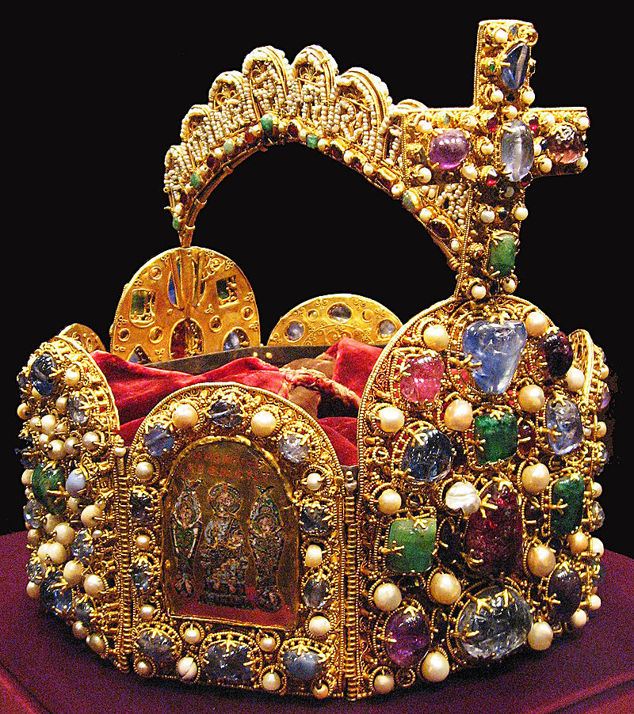

Niemcy; Republika Federalna Niemiec, RFN (niem. Deutschland; Bundesrepublik Deutschland, BRD, [ˈbʊndəsʁepuˌbliːk ˈdɔʏt͡ʃlant], wymowa i) – państwo federacyjne położone w zachodniej i środkowej Europie. Składa się z 16 krajów związkowych (landów), a jego stolicą i największym miastem jest Berlin. Państwo ma powierzchnię 357 578 km² i panuje w nim klimat umiarkowany. Z około 83 milionami mieszkańców jest najludniejszym państwem Unii Europejskiej. Stanowi czołowe pod względem gospodarczym i politycznym państwo Europy. Stanowi część strefy Schengen i strefy euro, jest członkiem ONZ, OECD, G7, G20. Po Stanach Zjednoczonych Niemcy są drugim krajem docelowym migracji na świecie.
Niemiecka flaga jest złożona z trzech pasów: czarnego u góry, czerwonego w środku i złotego u dołu. Została ona po raz pierwszy użyta w roku 1848, kiedy rozbite niemieckie państwa dążyły do zjednoczenia. Jej kolory zaczerpnięto z mundurów żołnierzy, którzy walczyli w okresie wojen Napoleońskich. Kiedy doszło do unifikacji, kolorami narodowymi stały się jednak czarny, czerwony i biały. W 1919 r., podczas tworzenia republiki, ponownie przyjęto barwy z 1848 r. W latach 30. XX wieku flagą państwową stała się flaga partii nazistowskiej, a po II wojnie światowej w obu nowych państwach niemieckich przyjęto flagę sprzed okresu nazizmu, lecz w Niemczech Wschodnich dodano do niej godło kraju. W wyniku kolejnego zjednoczenia Niemiec ponownie uznano flagę dawnych Niemiec Zachodnich. Godłem Niemiec jest czarny orzeł z czerwonym dziobem i pazurami na złotym tle. W starożytności orzeł był symbolem rzymskich cesarzy. W średniowieczu Karol Wielki przejął od nich symbol swojej władzy. Po podziale imperium Karola symbolem Świętego Cesarstwa Rzymskiego stał się dwugłowy orzeł na złotym tle. Mimo zniesienia cesarstwa w 1804 r., orzeł przetrwał jako herb monarchii austriackiej. Z tego też powodu nie mógł on zostać przywrócony po zjednoczeniu Niemiec i powstaniu Cesarstwa Rzymskiego, więc jako godło przyjęto orła jednogłowego. Był on także symbolem Republiki Weimarskiej oraz Republiki Federalnej Niemiec od 1948 r. Autorem tekstu niemieckiego hymnu jest August Heinrich Hoffmann von Fallersleben, muzykę zapożyczono z hymnu Cesarstwa Austriackiego, skomponowanego przez Josepha Haydna. Tekst został napisany 26 sierpnia 1841 r. i wzywa do zjednoczenia państwa. 11 sierpnia 1922 utwór stał się hymnem Republiki Weimarskiej. W okresie nazizmu tekst jego pierwszej strofy został wykorzystany przez propagandę w celu uprawomocnienia działań zbrojnych, prowadzonych wtedy przez Trzecią Rzeszę. Po II wojnie światowej nieoficjalnym hymnem Niemiec stała się trzecia zwrotka pieśni von Fallerslebena, co zatwierdzone zostało w 1991 r.
Plemiona germańskie wyodrębniły się prawdopodobnie w epoce brązu lub żelaza. Z południowej Skandynawii i północnych Niemiec od I wieku p.n.e. wędrowali na południe, wschód i zachód, stykając się z plemionami celtyckimi żyjącymi na terenie Galii, a także ludami irańskimi, Bałtami oraz Słowianami w Środkowej i Wschodniej Europie. Za sprawą Oktawiana Augusta rzymski dowódca Warus rozpoczął podbój Germanii (obszaru ciągnącego się od Renu do gór Ural). W 9 r. n.e., trzy rzymskie legiony zostały pokonane podczas bitwy w Lesie Teutoburskim przez Cherusków pod wodzą Arminiusa. Do roku 100, kiedy Tacyt napisał Germanię, plemiona germańskie osiedliły się wzdłuż Renu i Dunaju (Limes Górnogermańsko-Retycki), zajmując większość terenu dzisiejszych Niemiec. Austria, południowa Bawaria oraz zachodnia Nadrenia były jednak rzymskimi prowincjami. W trzecim wieku pojawiły się kolejne duże plemiona germańskie: Alamanowie, Frankowie, Chattowie, Sasi, Fryzowie oraz Turyngowie. Około roku 260 Germanie wkroczyli na tereny kontrolowane przez Cesarstwo Rzymskie. Po inwazji Hunów w 375 r. oraz podupadania Rzymu od 395 r. plemiona germańskie dalej migrowały na południowy wschód. Większe z nich zaczęły dominować nad słabszymi. Rozległe obszary zajmowali Frankowie, a tereny północne należały do Sasów.
25 grudnia 800 r., król Franków Karol Wielki został ukoronowany cesarzem i stworzył Imperium Karolińskie, które zostało podzielone w 843 r., na podstawie traktatu w Verdun. Święte Cesarstwo Rzymskie powstało ze wschodniej części podzielonego obszaru. Jego terytorium rozciągało się od rzeki Eider na północy do wybrzeży Morza Śródziemnego na południu. Podczas panowania władców z dynastii Ludolfingów w latach 919–1024, kilka ważniejszych księstw zostało połączonych, a król niemiecki został ukoronowany na świętego cesarza rzymskiego w 962 r. Święte Cesarstwo Rzymskie wchłonęło północną Italię i Burgundię podczas rządów dynastii salickiej (1024–1125), lecz cesarze utracili znaczną część swojej potęgi podczas sporu o inwestyturę. W okresie panowania Hohenstaufów (1138–1254) niemieccy książęta rozszerzyli swoje wpływy dalej na wschód i południe, na ziemie należące do Słowian, rozpoczynając osadnictwo na tych i leżących jeszcze dalej na wschód terenach. Północne miasta niemieckie rozwijały się jako członkowie Hanzy. W późniejszym okresie liczba ludności kraju zdecydowanie zmniejszyła się z powodu „wielkiego głodu” w latach 1315–1317, a następnie „czarnej śmierci” w latach 1348–1350. Złota Bulla z 1356 r. wprowadziła podstawową konstytucję kraju i wprowadziła w cesarstwie elekcję króla przez siedmiu elektorów. Marcin Luter opublikował 95 tez w 1517 r. w Wittenberdze, rzucając tym samym wyzwanie Kościołowi katolickiemu i rozpoczynając reformację. Kościół luterański stał się oficjalną religią w wielu niemieckich księstwach do roku 1530. Spór religijny doprowadził do wojny trzydziestoletniej (1618–1648), w ciągu której populacja regionu spadła o 30%. Pokój westfalski w 1648 r. zakończył wojny religijne w Niemczech, jednak kraj pozostał podzielony na wiele małych państewek. W XVIII wieku Święte Cesarstwo Rzymskie składało się z około 1800 takich terytoriów. Od 1740 r. spory pomiędzy austriacką monarchią Habsburgów oraz Prusami zdominowały niemiecką historię. W 1806 r. imperium zostało rozwiązane w rezultacie wojen napoleońskich.
Podczas upadku władzy Napoleona kongres wiedeński w 1814 r. stworzył Związek Niemiecki (Deutscher Bund), luźną ligę 39 krajów. Niezgoda z europejską restauracją monarchów spowodowała zwiększenie ruchów liberalnych, co spowodowało wprowadzenie nowych represji przez austriackiego kanclerza Klemensa von Metternicha. Niemiecki Związek Celny, unia celna, podtrzymywała ekonomiczną równość wszystkich państw niemieckich. Nacjonalizm i liberalne idee rewolucji francuskiej zdobyły rosnące poparcie Niemców, głównie młodych. W świetle Wiosny Ludów, która zdestabilizowała francuską republikę, intelektualiści i inni obywatele rozpoczęli rewolucję. Król Prus, Fryderyk Wilhelm IV, otrzymał ofertę zostania cesarzem, ale z ograniczoną władzą, co sprawiło, że zrezygnował z korony i zaproponował wprowadzenie konstytucji, doprowadzając do czasowego niepowodzenia ruchu nacjonalistycznego.